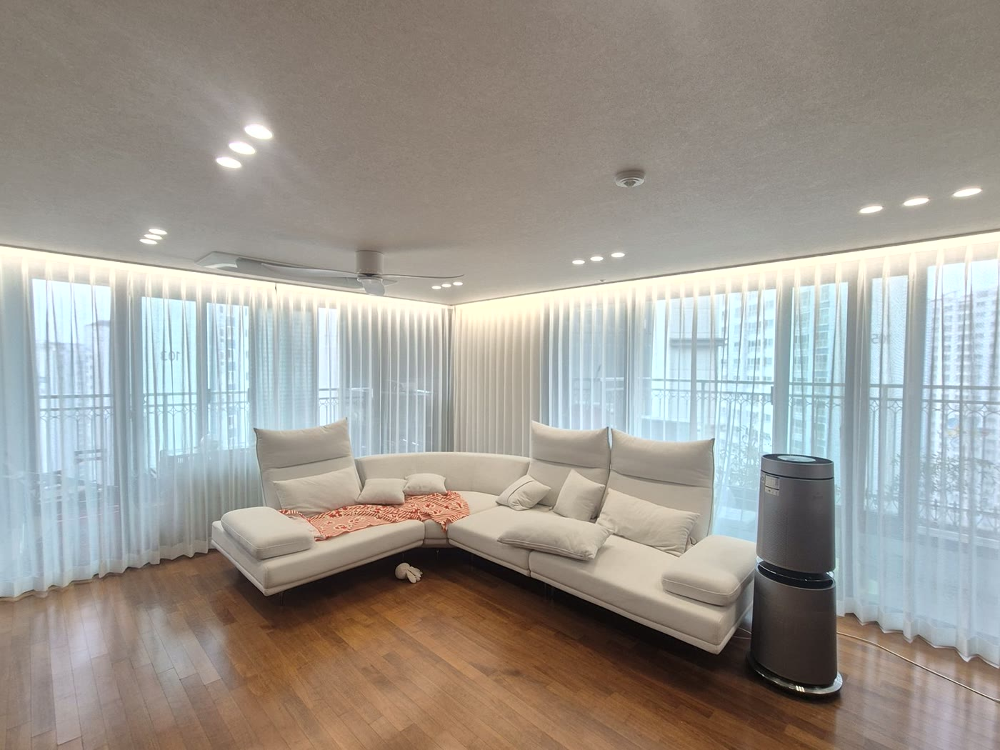
2026년 7월 17일포항 양덕 아파트 ㄱ자 거실 린넨커튼·베란다 롤스크린 시공후기
포항 양덕 아파트 ㄱ자 거실에 린넨 스타일 속커튼을 코너 레일로 이어 시공한 후기입니다.
두배나비주름으로 라인을 살리고, 작은방 베란다는 아이보리 채광 롤스크린으로 마감했습니다.
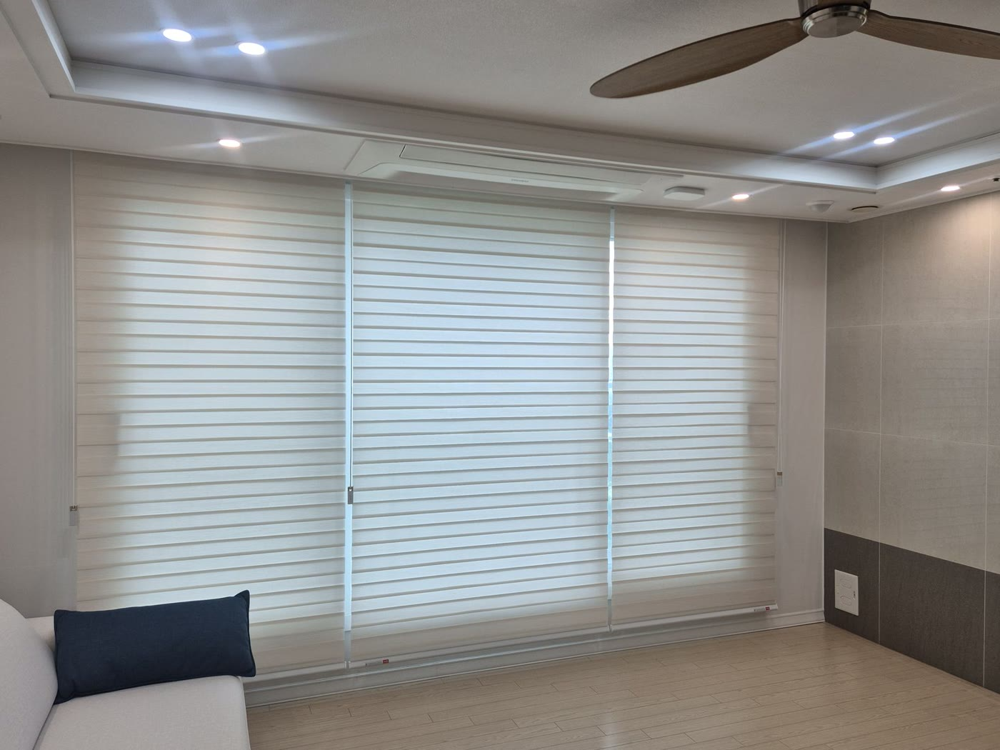
2026년 7월 16일대전 죽동 빌라 거실 우드룩 콤비블라인드·방 암막롤스크린 시공후기
대전 죽동 빌라 시공 후기입니다.
거실은 베이지 우드룩 콤비블라인드로 밝고 화사하게, 안방·컴퓨터방·게스트룸은 화이트 암막롤스크린으로 깊게 어둡게 나눠 시공했습니다.
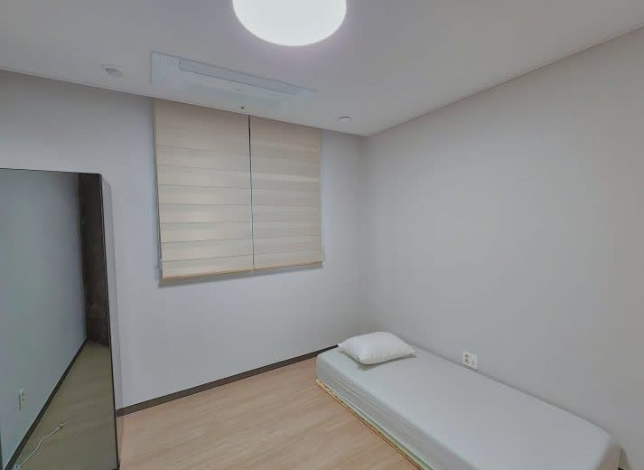
2026년 7월 13일의성 기숙사 아이보리 암막 콤비블라인드 시공후기
의성 기숙사·사택형 원룸 건물 전 실에 아이보리 암막 콤비블라인드를 시공했습니다.
방마다 실측을 다시 하고, 넓은 창은 두 폭으로 나눠 이음선 높이를 맞췄습니다.
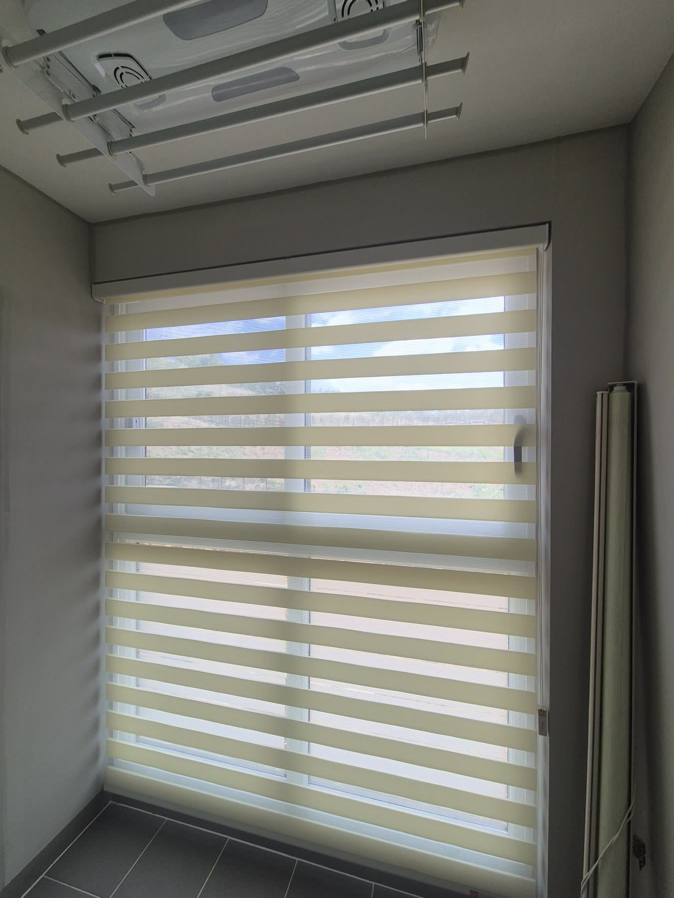
2026년 7월 11일포항 학산 아파트 아이보리 콤비블라인드·커튼레일 시공후기
포항 학산 아파트 콤비블라인드 시공 후기입니다.
이사 후 안 맞는 안방 베란다·작은방 창만 아이보리 콤비블라인드로 새로 맞추고, 커튼레일은 블라인드와 겹치지 않게 커튼박스 모서리에 설치한 과정을 담았습니다.
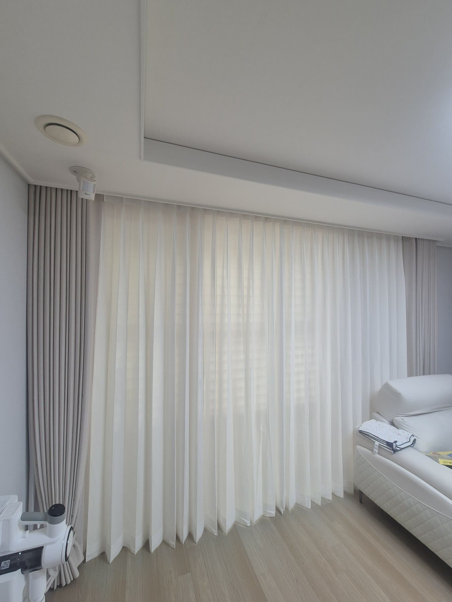
2026년 7월 10일경주 감포 사택 거실 2중커튼·안방 암막커튼 시공후기
경주 감포 사택 커튼 시공 후기입니다.
첫아이를 기다리는 집, 거실은 화이트 속커튼과 베이지 암막을 겹친 2중 커튼, 아기가 잘 안방·작은방은 100% 암막커튼으로 시공한 과정과 이유를 담았습니다.
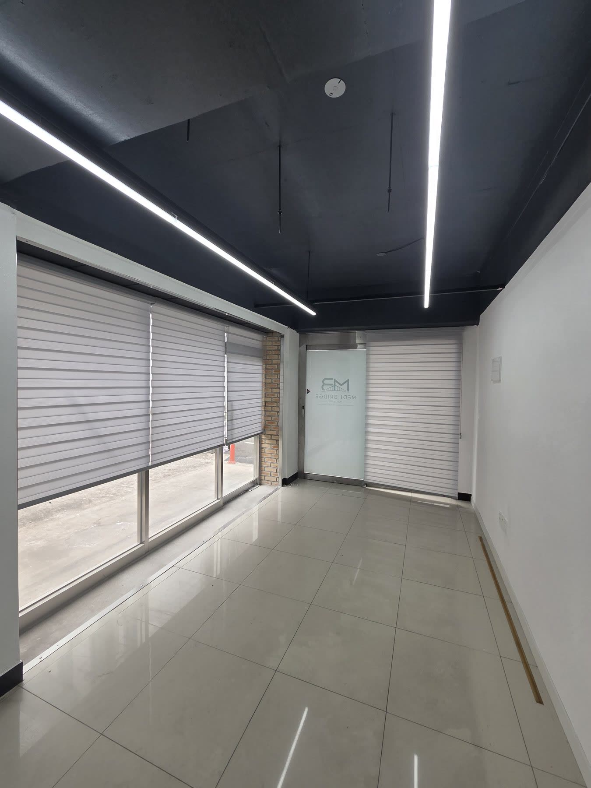
2026년 7월 9일영천 상가 전면 통창 콤비블라인드 시공후기
영천 도로변 1층 신축 상가 전면 통창 콤비블라인드 시공 사례입니다.
라이트그레이 톤 3분할 시공으로 외부 시선·눈부심을 차단하고 채광은 부드럽게 유지했습니다.
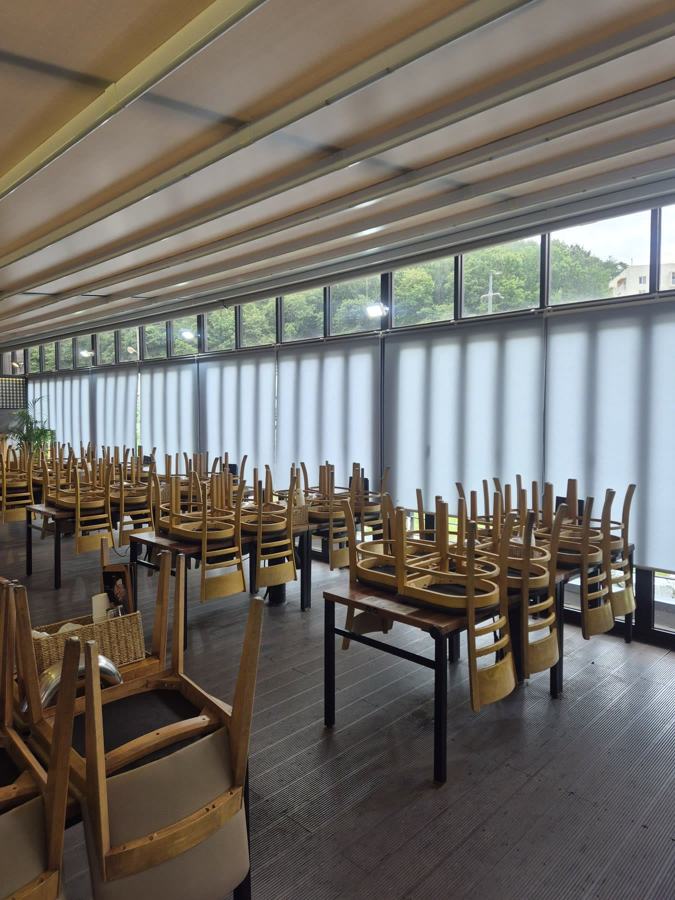
2026년 7월 8일청송 주왕산가든 대형 홀 채광조절 롤스크린 전체 교체 시공후기
청송 주왕산가든 음식점 대형 홀 채광조절형 롤스크린 전체 교체 사례입니다.
윗창 산 뷰 전망은 살리고 아랫부분 눈부심만 차단, 영업 외 시간에 순차 시공했습니다.
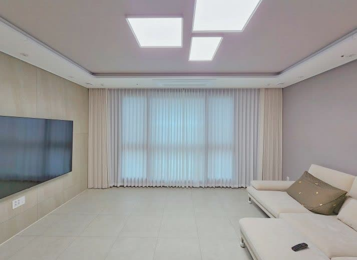
2026년 7월 1일안동 정하동 아파트 거실·안방 베이지 2중커튼 시공후기
안동 정하동 아파트 거실·안방 베이지 2중커튼 시공 사례입니다.
일반쉬폰 속커튼과 베이지 암막 겉커튼을 풀나비주름으로 겹쳐 채광과 차광을 한 번에 잡았습니다.
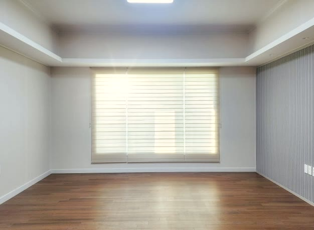
2026년 7월 1일경주 황성동 빌라 콤비블라인드 시공후기
경주 황성동 빌라 입주 전 빈집에 베이지·아이보리 콤비블라인드를 시공한 후기입니다.
빈집 세팅의 장점과 콤비블라인드 채광 조절, 색 선택 요령을 담았습니다.
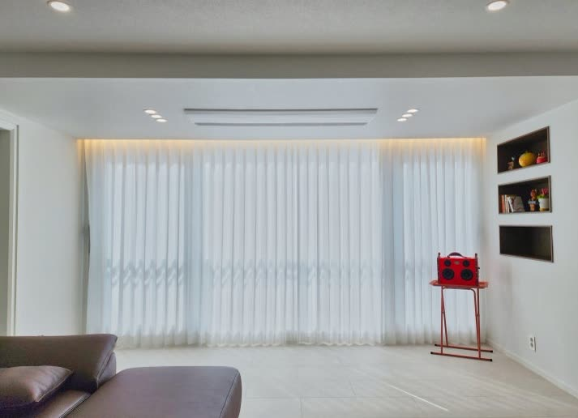
2026년 6월 30일영주 가흥동 아파트 거실·아이방·놀이방 커튼 시공후기
영주 가흥동 아파트 거실 헤비쉬폰, 아이방 인디언핑크 커튼, 놀이방 콤비블라인드 시공 사례입니다.
공간별 쓰임에 맞춰 제품을 다르게 잡았습니다.
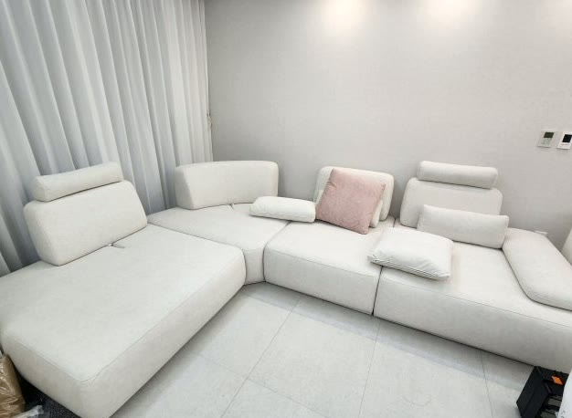
2026년 6월 27일안동 옥동 아파트 2중커튼 시공후기
안동 옥동 신축 아파트 거실·안방 2중 커튼 시공 후기입니다.
은은한 채광과 시선 차단은 기본으로 잡고, 거실은 백아이보리 암막으로 모던하게, 안방은 인디언핑크 암막으로 포근하게 — 같은 2중 구성에 컬러만 달리해 톤을 맞춘 과정을 담았습니다.
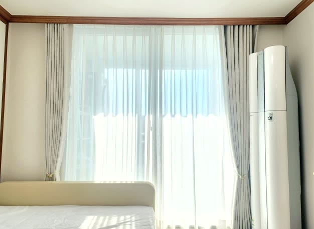
2026년 6월 24일구미 옥계동 침실 헤비쉬폰 암막 2중커튼 시공후기
구미 옥계동 빌라 침실 헤비쉬폰+암막 2중커튼 시공 후기입니다.
낮의 은은한 채광과 시선 차단, 밤의 확실한 암막 숙면을 한 번에 잡은 과정과 매립 창 헤비쉬폰 단독 구성을 담았습니다.
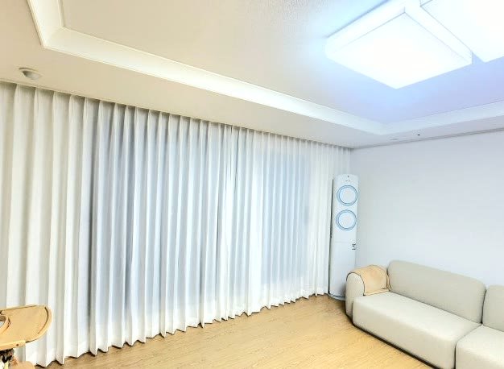
2026년 6월 24일포항 장성동 아파트 헤비쉬폰 콤비블라인드 시공후기
포항 장성동 아파트 입주 세팅 후기입니다.
거실·침실은 화이트 나비주름 헤비쉬폰, 작은방은 콤비블라인드로 채광을 조절하며 전 공간을 한 톤으로 통일한 과정을 담았습니다.
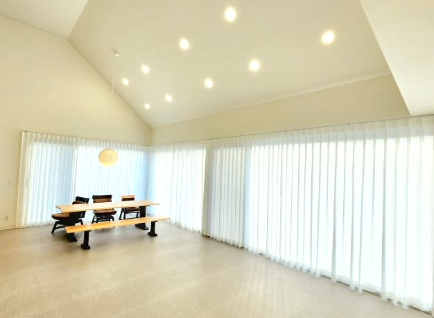
2026년 6월 24일영천 금호읍 단독주택 헤비쉬폰커튼 시공후기
영천 금호읍 단독주택 대형 통창에 화이트 나비주름 헤비쉬폰 커튼을 시공한 후기입니다.
박공천장 전원주택의 채광과 개방감은 살리고 외부 시선만 가린 과정을 담았습니다.
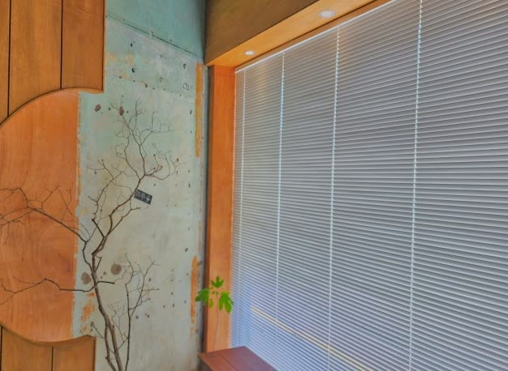
2026년 6월 21일경산 중방동 카페 우드블라인드 시공후기
경산 중방동 1층 카페 우드블라인드 시공 후기입니다.
도로변 대형 통창의 외부 시선과 서향 오후 눈부심을, 화이트·아이보리 알루미늄 우드블라인드 25mm 슬랫으로 함께 잡은 과정을 담았습니다.
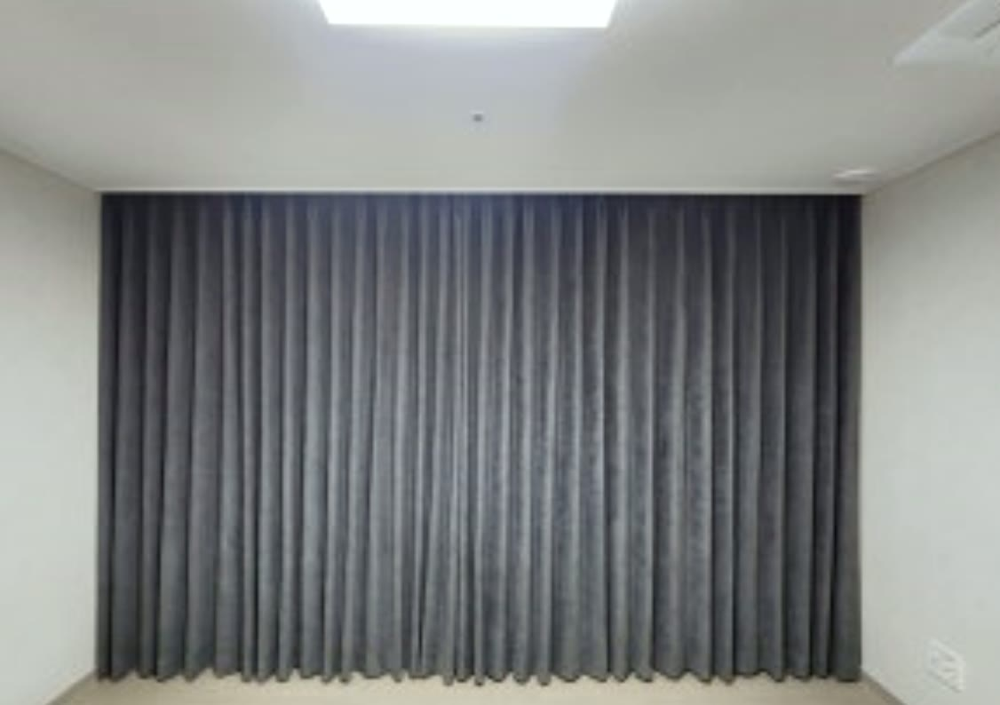
2026년 6월 21일영주 아파트 진그레이 암막커튼 시공후기
영주 리모델링 아파트 전 공간 진그레이 암막커튼 시공 후기입니다.
아침에 주무시는 고객님을 위해 거실·안방은 쉬폰+암막 이중 커튼, 작은방은 암막커튼으로 완전 차광을 잡고, 형상기억 두배 나비주름으로 마감한 과정을 담았습니다.
 2026년 6월 20일
2026년 6월 20일영덕 지품면 신축주택 암막커튼 시공후기
영덕 지품면 신축 단독주택 커튼·블라인드 시공 후기입니다.
거실·안방은 단열까지 잡은 암막커튼 두배 나비주름으로, 현관창·옷방은 콤비블라인드로 마감한 과정을 담았습니다.
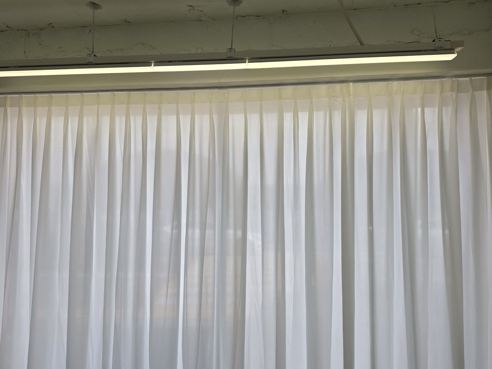
2026년 6월 8일안동 서동문로 에스테틱 매장 헤비쉬폰 커튼 시공후기
안동 서동문로 에스테틱 매장 전면창 헤비쉬폰 커튼 시공 후기입니다.
도로·인도와 면한 1층 통창의 시선 차단과 채광을 함께 잡기 위해 헤비쉬폰 원단을 두배 나비주름으로 시공한 과정을 담았습니다.
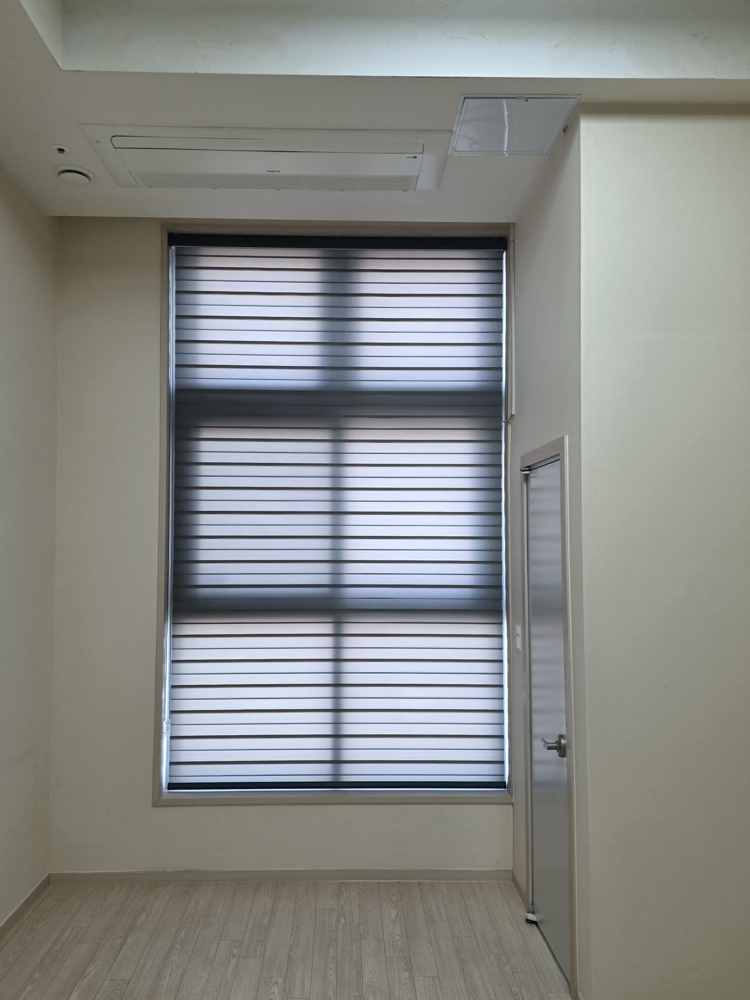
2026년 6월 7일포항 대잠동 오피스텔 진그레이 콤비블라인드 시공후기
포항 대잠동 오피스텔 진그레이 콤비블라인드 시공 후기입니다.
세입자 입주 전, 햇빛에 삭은 낡은 블라인드를 천장 높은 큰 창에 진그레이 콤비로 교체한 과정과 임대 공간 블라인드 고르는 법을 담았습니다.
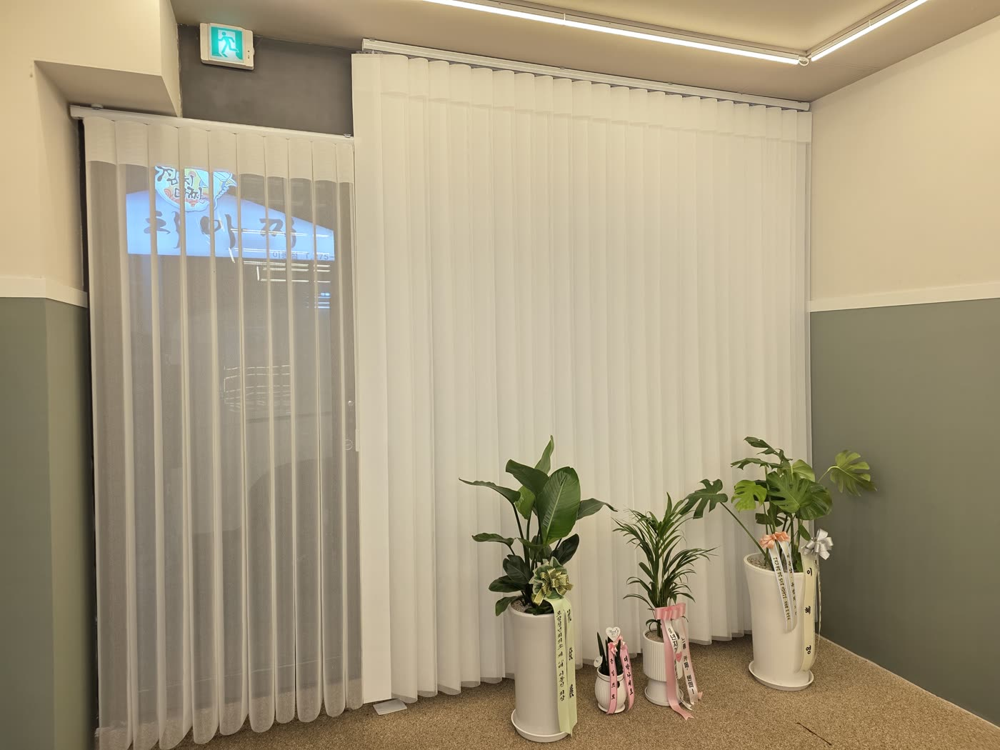
2026년 6월 5일포항 상가 매장 유니슬랫 시공후기
포항 신규 개업 상가 유니슬랫 시공 사례입니다.
도로변 통유리의 외부 시선은 가리고 채광은 살리면서, 높이가 다른 창은 두 폭으로 분리 시공했습니다.
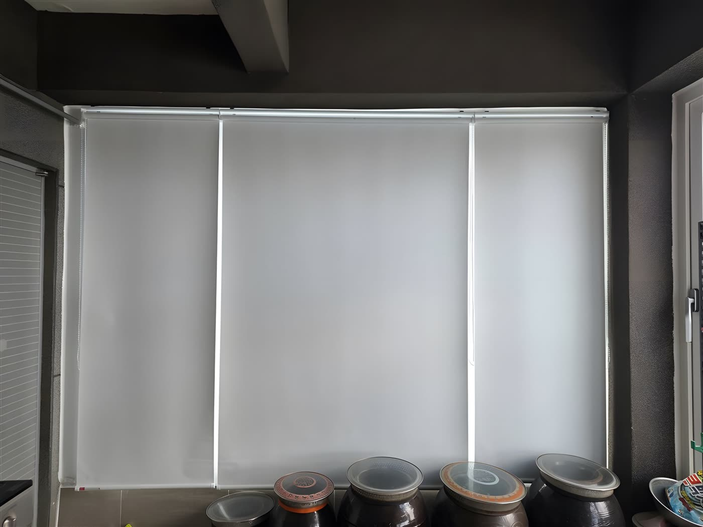
2026년 6월 4일포항 죽도동 베란다 암막롤스크린 시공후기
포항 죽도동 베란다 암막롤스크린 시공 사례입니다.
서향 큰 창에 차광 100% 방염 원단 롤스크린 3개를 창 칸에 맞춰 설치해 눈부심과 열기를 잡았습니다.